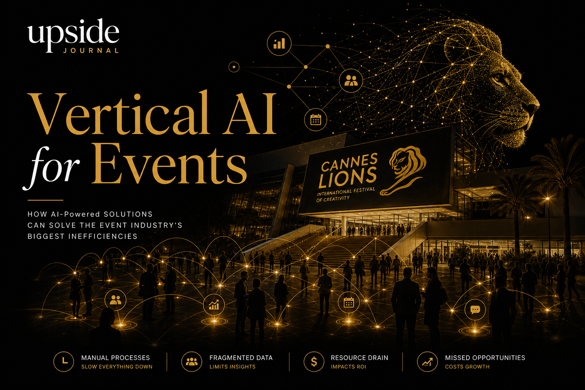

Every June, the global advertising industry pours roughly $3 billion into Cannes Lions. Flights, hotels, yacht parties, branded beaches, VIP dinners — and yet the event's core function, connecting the right people to close the right deals, remains stubbornly analogue. In 2026, that inefficiency is no longer quaint. It is a technology failure.
The $3 Billion Inefficiency
Let us break down the Cannes Lions spend. According to industry estimates compiled by the Association of National Advertisers (ANA) and corroborated by financial disclosures from WPP, Publicis, and Omnicom:
Delegate passes: $4,700–$28,000 per person. With 15,000+ attendees, pass revenue alone exceeds $100 million.
Travel and accommodation: The average Cannes attendee spends $8,400 on flights and hotels. Total: approximately $126 million.
Brand activations and sponsorships: The Palais and Croisette activations run $500,000 to $5 million each. An estimated 200+ activations total roughly $600 million.
Hospitality: Yacht rentals, private dinners, rooftop events, and entertainment add another $400 million to the ecosystem.
Opportunity cost: Senior executives spending 5–7 days away from operations. At average compensation rates for CMOs and agency heads, this represents $1.5 billion in collective time.
The total easily surpasses $3 billion. And the return? A 2025 survey by Campaign found that 62 per cent of Cannes attendees could not identify a single concrete deal that originated from the event. Eighty per cent of business card exchanges led nowhere within 60 days.

Why Horizontal AI Cannot Fix This
The technology industry has responded to the events problem with horizontal solutions — generic networking apps, CRM plugins, badge-scanning tools. None of them work at the scale and complexity of Cannes.
The reason is simple: events like Cannes Lions are not generic networking occasions. They are vertical ecosystems with domain-specific matching requirements. A CMO from Unilever looking for a programmatic buying partner has fundamentally different needs from a startup founder seeking angel investment. A horizontal AI matching algorithm trained on LinkedIn connection patterns cannot distinguish between these use cases.
What events need is vertical AI — purpose-built intelligence that understands the specific ontology of an industry, the hierarchy of relationships, and the time-bounded dynamics of a multi-day gathering.
The Vertical AI Event Stack
A proper vertical AI solution for events requires four layers:
- Contextual Attendee Intelligence. Before the event begins, the system must ingest and understand each attendee's professional context — not just their title and company, but their current priorities, deal stage, budget cycle, and stated objectives. This goes far beyond what a LinkedIn profile provides. It requires structured intake, NLP-driven analysis of public signals (earnings calls, press releases, social posts), and explicit preference capture.
- Dynamic Matching Engine. The matching algorithm must operate in real time, factoring in not just profile compatibility but availability, physical proximity within the venue, conversation history, and mutual connection strength. At Cannes, where the average attendee has fewer than 40 productive hours across the week, every introduction must count.
- Meeting Orchestration. Scheduling at scale events is a constraint-satisfaction problem. The AI must coordinate across time zones, venue locations (the Palais, the Carlton, beach activations, yacht meetings), and the social protocols specific to the advertising industry. A 15-minute slot between a holding company CEO and a tech startup founder has different requirements than a 45-minute working session between media planners.
- Post-Event Relationship Continuity. This is where every existing solution fails. The AI must maintain relationship context after the event ends — tracking follow-up commitments, deal progression, and re-engagement triggers for the next event cycle. Without this layer, the 80 per cent follow-up failure rate persists regardless of how good the on-site matching was.
Where Concorde Fits
ConcordeApp is building precisely this vertical AI layer for high-value professional events. Rather than competing with generic CRM tools or horizontal networking apps, Concorde operates as an event-native intelligence platform — understanding the specific dynamics of gatherings like Cannes Lions, the UN General Assembly, and Davos.
The architecture maps directly to the four-layer stack above. Contextual intake before the event. Real-time matching during it. Orchestrated scheduling across complex venue configurations. And critically, post-event continuity that converts introductions into outcomes.
For an industry that spends $3 billion on a single week in the South of France, even a modest improvement in connection-to-deal conversion rates justifies the technology investment many times over. A 10 per cent improvement in follow-up success at Cannes would represent $300 million in unlocked value.
The Broader Opportunity
Cannes is the most visible example, but the vertical AI opportunity extends across the entire professional events industry — a market worth $1.5 trillion globally. Conference organisers, trade show operators, and summit producers all face the same fundamental problem: their events generate enormous volumes of human interaction but capture almost none of the value from those interactions in structured, actionable data.
The companies that solve this will not be general-purpose AI vendors. They will be vertical specialists who understand that an AI model trained on advertising industry relationships produces fundamentally different outputs than one trained on healthcare or financial services.
The Cannes $3 billion problem is not about money. It is about waste. And in 2026, waste at that scale is a technology problem with a technology solution.
YouTube Embed: Top 10 AI Conferences to Attend in 2026 — A look at how AI is transforming the professional events landscape.
About the Author
Chaste Inegbedion — Chaste is an editorial contributor at Upside Journal, covering enterprise infrastructure, AI deployment, and the intersection of technology and live events.